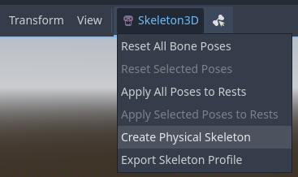
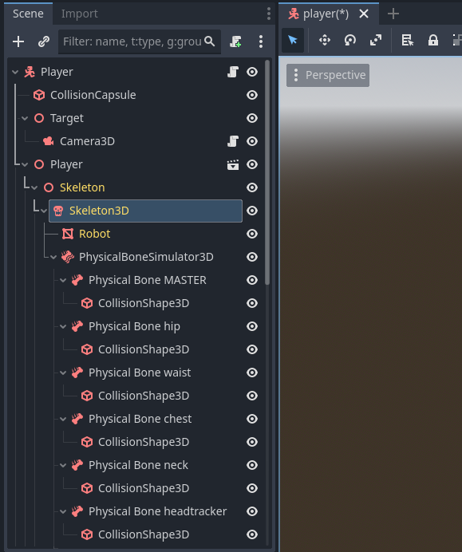
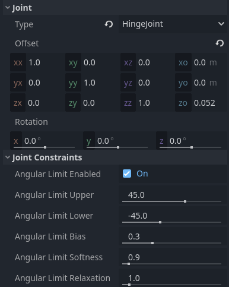
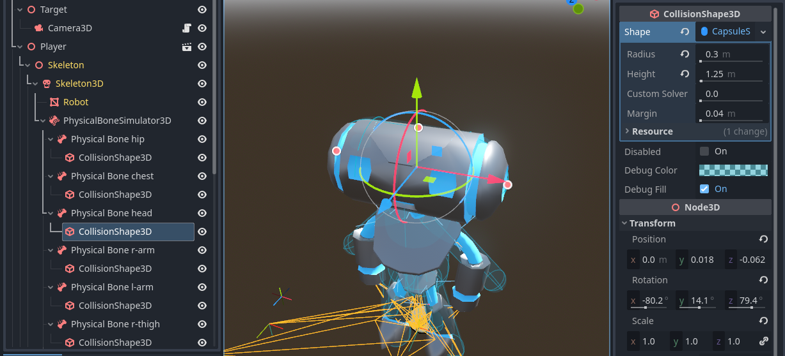
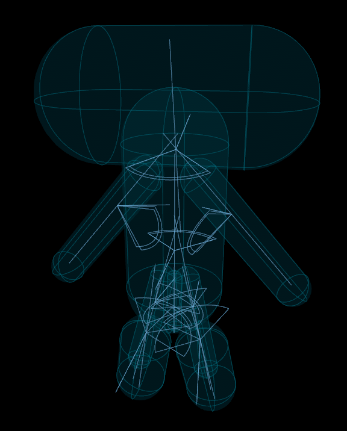
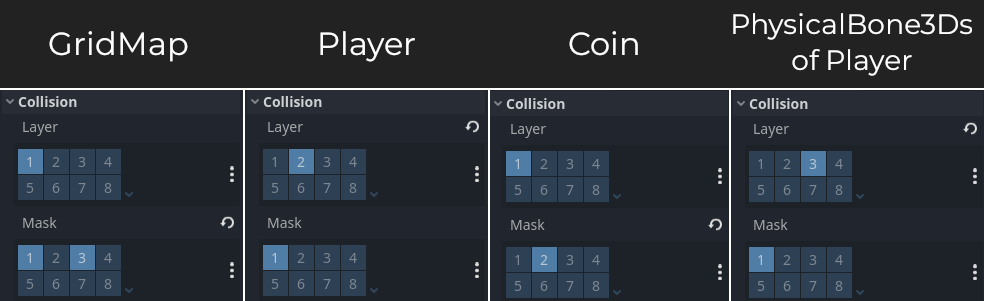

Hệ thống ragdoll
Giới thiệu
Godot hỗ trợ vật lý ragdoll. Ragdoll dựa vào mô phỏng vật lý để tạo hoạt ảnh thủ tục (procedural) chân thực. Chúng được dùng cho hoạt ảnh khi nhân vật chết trong nhiều game.
Trong bài hướng dẫn này, chúng ta sẽ dùng demo Platformer 3D để thiết lập một ragdoll.
Ghi chú
Bạn có thể tải demo Platformer 3D trên GitHub hoặc qua Asset Library.
Bạn cũng có thể xem ví dụ về một thiết lập ragdoll hoàn chỉnh trong demo Ragdoll Physics.
Thiết lập ragdoll
Tạo physical bone
Giống như nhiều tính năng khác trong engine, có hai node được dùng để thiết lập một ragdoll:
Một node PhysicalBoneSimulator3D. Node này là cha của tất cả physical bone và chịu trách nhiệm điều khiển việc mô phỏng.
Một hoặc nhiều node con PhysicalBone3D. Mỗi node đại diện cho một xương trong ragdoll.
Mở demo platformer trong Godot, rồi mở scene player/player.tscn. Chọn node Skeleton3D. Một nút skeleton sẽ xuất hiện ở phía trên viewport của trình chỉnh sửa 3D:

Tạo physical skeleton trong trình chỉnh sửa
Nhấp vào đó và chọn tùy chọn . Godot sẽ tạo các node PhysicalBone3D và collision shape cho mỗi xương trong skeleton, cùng với các pin joint để nối chúng lại với nhau:

Cây scene của scene player sau khi tạo physical skeleton
Một số xương được tạo ra là không cần thiết, như xương MASTER trong scene này. Chúng ta sẽ dọn dẹp skeleton bằng cách xóa chúng đi.
Dọn dẹp và tối ưu skeleton
Với mỗi PhysicalBone3D mà engine cần mô phỏng, sẽ có một chi phí hiệu năng. Bạn nên xóa mọi xương quá nhỏ để tạo ra khác biệt trong mô phỏng, cũng như tất cả các xương tiện ích.
Ví dụ, với một nhân vật hình người, bạn không cần có physical bone cho từng ngón tay. Thay vào đó, bạn có thể dùng một xương duy nhất cho cả bàn tay, hoặc một xương cho lòng bàn tay, một cho ngón cái và một cho bốn ngón còn lại.
Xóa các node PhysicalBone3D sau: MASTER, waist, neck, headtracker. Điều này cho chúng ta một skeleton được tối ưu và giúp việc điều khiển ragdoll dễ dàng hơn.
Điều chỉnh joint và ràng buộc
Khi bạn đã điều chỉnh xong các collision shape, ragdoll gần như đã sẵn sàng. Bây giờ, bạn cần điều chỉnh các pin joint để có mô phỏng tốt hơn. Mặc định, các node PhysicalBone3D được gán một pin joint không có ràng buộc. Để thay đổi pin joint, hãy chọn một node PhysicalBone3D và thay đổi loại ràng buộc trong mục của inspector. Tại đó, bạn có thể thay đổi hướng và giới hạn của ràng buộc.
Joint cũng có gizmo hiển thị trong trình chỉnh sửa 3D, nên bạn có thể thấy các ràng buộc của chúng hoạt động thực tế.

Điều chỉnh joint trong inspector sau khi chọn một node PhysicalBone3D
Mẹo
Để có góc nhìn tốt hơn khi chỉnh sửa joint và collision shape, bạn có thể làm như sau:
Ẩn các node PhysicalBone3D mà bạn hiện không làm việc cùng, để có thể tập trung vào những node đang điều chỉnh.
Ẩn MeshInstance3D của nhân vật bằng cách nhấp vào biểu tượng con mắt bên cạnh nó trong dock cây scene.
Ẩn các gizmo Skeleton3D, để các tam giác màu cam đại diện cho skeleton không làm rối viewport trong khi vẫn để phần còn lại hiển thị. Để làm vậy, hãy nhấp ở phía trên viewport của trình chỉnh sửa 3D cho đến khi biểu tượng con mắt hiện trạng thái nhắm.
Tắt môi trường xem trước bằng cách nhấp vào biểu tượng quả địa cầu ở phía trên viewport của trình chỉnh sửa 3D.
Đặt cài đặt dự án Default Clear Color thành màu đen tuyền trong Project Settings. Điều này chỉ có tác dụng nếu môi trường xem trước đã bị tắt.
Thay đổi chế độ vẽ debug bằng nút ở góc trên bên trái viewport của trình chỉnh sửa 3D. Các tùy chọn và đặc biệt hữu ích khi điều chỉnh collision shape, vì chúng cho phép bạn nhìn xuyên qua mesh gốc.
Dùng camera trực giao bằng cách nhấp vào các nút // ở góc trên bên phải viewport của trình chỉnh sửa 3D.
Đây là danh sách các joint có sẵn:
None: Không áp dụng ràng buộc nào.
ConeJoint: Khớp cầu (ball-and-socket). Hữu ích cho vai, hông, cổ.
HingeJoint: Cung cấp ràng buộc góc; hãy hình dung nó như bản lề cửa. Hữu ích cho khuỷu tay và đầu gối.
PinJoint: Giữ hai body được nối với nhau (mặc định). Dẫn đến việc các xương bị "rũ xuống", vì vậy nên dùng các loại joint khác cho hầu hết nhân vật.
SliderJoint: Trượt một xương dọc theo xương khác trên một trục cụ thể.
6DOFJoint: Joint mạnh mẽ nhất, cung cấp cả ràng buộc tuyến tính lẫn ràng buộc góc, nhưng cũng phức tạp nhất để cấu hình.
Nếu còn phân vân, hãy bắt đầu với HingeJoint và ConeJoint, vì chúng bao quát hầu hết các trường hợp sử dụng:
Với HingeJoint, hãy nhớ bật Angular Limit trong mục của inspector. Sau khi bật, bạn có thể thấy góc mà nó bị giới hạn trong viewport. Bạn có thể xoay PhysicalBone3D để thay đổi trục mà joint bị ràng buộc, rồi điều chỉnh các góc.
Với ConeJoint, thường tốt nhất là giới hạn Swing Span trong khoảng 20 đến 90 độ, và Twist Span trong khoảng 20 đến 45 độ.
Điều chỉnh collision shape
Việc tiếp theo là điều chỉnh collision shape và kích thước của các physical bone để khớp với phần cơ thể mà mỗi xương cần mô phỏng.
Bạn nên điều chỉnh collision shape sau khi điều chỉnh joint và ràng buộc, vì xoay một joint cũng sẽ xoay collision shape. Để tránh phải điều chỉnh collision shape hai lần, tốt hơn là điều chỉnh joint trước.
Lưu ý rằng có thể có nhiều collision shape làm node con của một node PhysicalBone3D. Điều này có thể hữu ích để biểu diễn các hình dạng chi đặc biệt phức tạp nhưng vốn cứng.
Mẹo
Để tạm dừng phát hoạt ảnh trong khi điều chỉnh ragdoll, hãy chọn node AnimationTree và tắt thuộc tính Active trong Inspector. Hãy nhớ bật lại khi bạn hoàn tất, vì nó điều khiển việc phát hoạt ảnh trong khi chơi.

Điều chỉnh collision shape trong trình chỉnh sửa 3D
Đây là kết quả cuối cùng:

Kết quả sau khi điều chỉnh joint và collision shape (mesh của người chơi được ẩn để dễ quan sát)
Mô phỏng ragdoll
Ragdoll giờ đã sẵn sàng để sử dụng. Để bắt đầu mô phỏng và phát hoạt ảnh ragdoll, bạn cần gọi phương thức PhysicalBoneSimulator3D.physical_bones_start_simulation(). Gắn một script vào node PhysicalBoneSimulator3D là cha của tất cả các node PhysicalBone3D trong scene, rồi gọi nó trong phương thức _ready của script:
func _ready():
physical_bones_start_simulation()
public override void _Ready()
{
PhysicalBonesStartSimulation();
}
Để dừng mô phỏng, hãy gọi phương thức PhysicalBoneSimulator3D.physical_bones_stop_simulation().
Bạn cũng có thể giới hạn mô phỏng chỉ ở một vài xương. Điều này có thể hữu ích để tạo các hiệu ứng như chi ragdoll hoặc các vật đính kèm có thể tương tác với thế giới. Để làm vậy, hãy truyền tên xương (không phải tên node PhysicalBone3D) làm tham số. Để xem tên xương, hãy xem thuộc tính Bone Name trong inspector sau khi chọn một node PhysicalBone3D.
Mẹo
Khi dùng physical skeleton được tạo tự động như trong bài hướng dẫn này, tên xương cũng có trong tên node. Ví dụ, trong Physical Bone l-arm, l-arm là tên xương.
func _ready():
physical_bones_start_simulation(["l-arm", "r-arm"])
public override void _Ready()
{
PhysicalBonesStartSimulation(["l-arm", "r-arm"]);
}
Lưu ý rằng tên xương không tồn tại sẽ không in ra lỗi hay cảnh báo nào. Nếu không có gì xảy ra khi bắt đầu mô phỏng (hoặc nếu toàn bộ cơ thể bị ragdoll thay vì chỉ những xương cụ thể), hãy kiểm tra lại danh sách xương đã cung cấp.
Đây là ví dụ về mô phỏng ragdoll một phần:
Mẹo
Để điều khiển mức độ ảnh hưởng của mô phỏng ragdoll một phần đến toàn bộ hoạt ảnh, bạn có thể điều chỉnh thuộc tính Influence trong node PhysicalBoneSimulator3D là cha của tất cả các node PhysicalBone3D. Mặc định, giá trị này là 1.0, nghĩa là mô phỏng ragdoll ghi đè hoàn toàn phần còn lại của hoạt ảnh.
Collision layer và mask
Hãy đảm bảo thiết lập collision layer và mask đúng cách để capsule của CharacterBody3D không cản trở mô phỏng vật lý. Hãy nhớ điều chỉnh collision layer và mask trong scene đồng xu nữa, để người chơi vẫn có thể nhặt đồng xu:

Layer và mask phải được điều chỉnh thành các giá trị này trong inspector cho từng node
Bạn có thể tìm thấy GridMap trong demo platformer 3D tại stage/grid_map.scn. Node Area3D của đồng xu (nơi cần điều chỉnh layer và mask) nằm tại coin/coin.tscn.
Mẹo
Để chọn nhanh tất cả các node PhysicalBone3D, hãy nhập t:PhysicalBone3D vào thanh tìm kiếm ở phía trên dock cây scene. Thao tác này lọc cây scene để chỉ hiển thị các node PhysicalBone3D, cho phép bạn chọn tất cả cùng lúc bằng Shift + Left mouse button trên mục đầu tiên và mục cuối cùng.
Nếu không làm vậy, va chạm sẽ hoạt động sai vì người chơi sẽ va chạm với chính ragdoll (đang không hoạt động) của nó. Điều này có thể khiến người chơi nảy loạn xạ hoặc bị kẹt.
Giống như RigidBody3D, PhysicalBone3D hỗ trợ ngoại lệ va chạm thông qua code bằng các phương thức physical_bones_add_collision_exception() và physical_bones_remove_collision_exception(). Bạn có thể dùng chúng để ngăn va chạm với một đối tượng cụ thể mà không cần dựa vào layer và mask.
Xem thêm
Để biết thêm thông tin, xem Collision layer và mask.